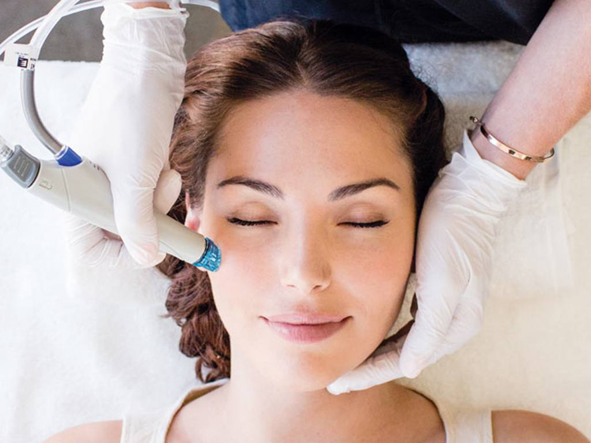
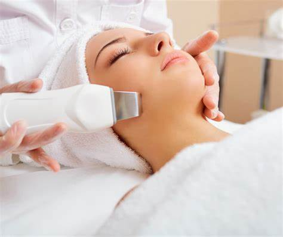
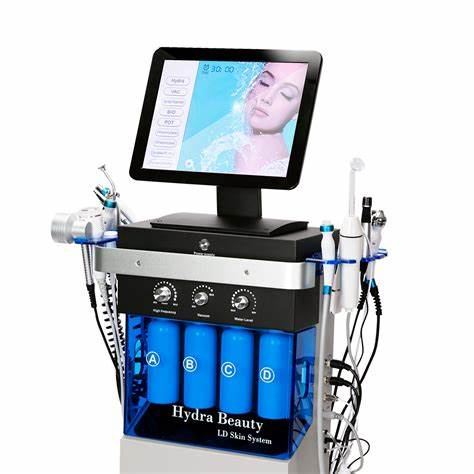
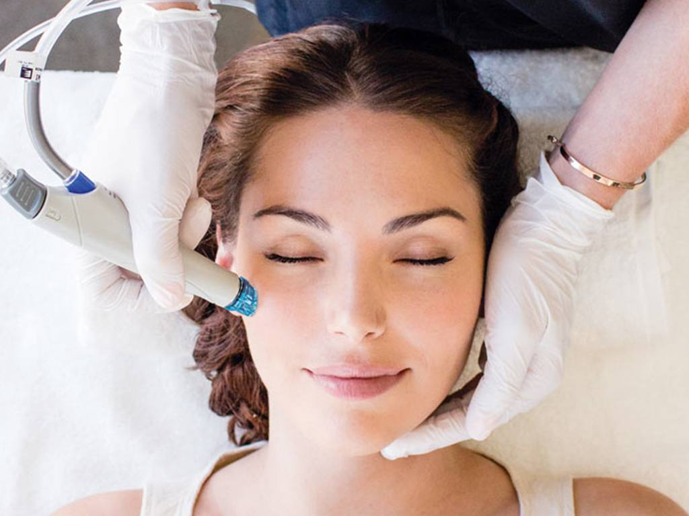
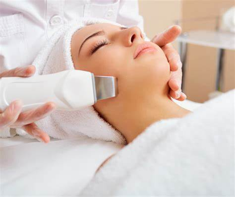
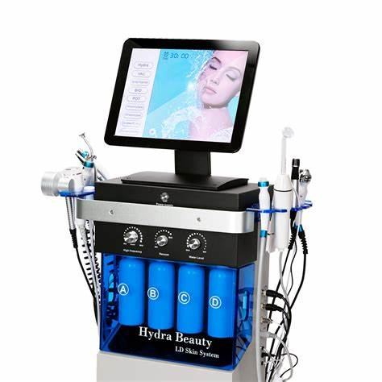

Hydra Beauty este un tratament facial avansat care curăță, hidratează și revitalizează pielea. Această procedură combină exfolierea, extracția impurităților și infuzia de seruri nutritive pentru a oferi tenului un aspect radiant și sănătos.
Beneficiile Tratamentului Hydra Beauty
Curățarea profundă a porilor și îndepărtarea impurităților
Hidratarea intensă a pielii
Îmbunătățirea texturii și tonusului pielii
Reducerea ridurilor fine și a liniilor de expresie
Revitalizarea și iluminarea tenului
Cui i se adresează?
Hydra Beauty este potrivit pentru toate tipurile de ten, inclusiv pentru pielea sensibilă. Este ideal pentru persoanele care doresc să îmbunătățească hidratarea, să reducă semnele de îmbătrânire sau să își mențină un ten curat și luminos.
Procedura Pas cu Pas
Consult inițial: Specialistul va analiza starea pielii tale și va personaliza tratamentul în funcție de nevoile specifice ale tenului tău.
Curățare și exfoliere: Tenul este curățat în profunzime și exfoliat pentru a îndepărta celulele moarte și a pregăti pielea pentru tratament.
Extracția și infuzia serurilor: Se efectuează extracția impurităților din pori, urmată de infuzia serurilor nutritive și hidratante pentru a revitaliza pielea.
Îngrijirea post-tratament: Specialistul va aplica o cremă hidratantă și un produs de protecție solară pentru a proteja pielea după tratament.
Rezultate Așteptate și Durata Lor
Rezultatele tratamentului Hydra Beauty sunt vizibile imediat după ședință, cu o piele mai curată, mai hidratată și mai radiantă. Efectele pot dura până la 4-6 săptămâni, în funcție de tipul de ten și de rutina de îngrijire a pielii.
Frecvența și Numărul de Ședințe Recomandate
Se recomandă efectuarea tratamentului Hydra Beauty o dată pe lună pentru a menține rezultatele și a îmbunătăți sănătatea pielii pe termen lung.
Contraindicații și Precauții
Hydra Beauty este un tratament blând și sigur pentru toate tipurile de ten. Totuși, persoanele cu alergii severe sau cu afecțiuni cutanate active trebuie să consulte un specialist înainte de a efectua tratamentul.
Întrebări Frecvente
Cât durează o ședință de Hydra Beauty?
O ședință de Hydra Beauty durează în jur de 60 de minute.
Este nevoie de o pregătire specială înainte de tratament?
Nu, dar este recomandat să eviți expunerea la soare și produsele exfoliante agresive cu câteva zile înainte de tratament.
Pot aplica machiaj imediat după tratament?
Deși pielea va arăta excelent după tratament, este recomandat să eviți aplicarea machiajului timp de câteva ore pentru a permite pielii să respire.
Programări și Contact
Pentru programări, vă rugăm să ne contactați la telefon: +40 123 456 789 sau prin email: contact@bodyfusion.ro.
 




